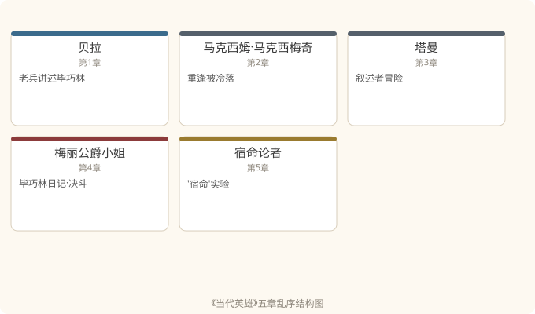

当代英雄
一、基本信息
| 作者 | 莱蒙托夫 |
|---|---|
| 成书/出版 | 1840年出版（Britannica） Mikhail Lermontov — Encyclopaedia Britannica（百科全书） |
| 国别/地区 | 俄国 |
| 时代 | 近代 · 19世纪 |
| 体裁 | 长篇小说（五章乱序） |
| 语言 | 俄语 |

《当代英雄》五章乱序结构图（主题·结构图）
二、创作背景
人物：'cynical officer Pechorin'（玩世不恭的军官毕巧林）——'a portrait of the vices of our whole generation'（我们整整一代人的恶习的肖像——Britannica 引莱蒙托夫自语）。
结构：五章乱序（'Bela'—'Maxim Maximych'—'Taman'—'Princess Mary'—'The Fatalist'——通说待核）——非线性的'心理拼图'（通说）。
三、内容脉络
'贝拉'：哥萨克老兵马克西姆·马克西梅奇讲述毕巧林以交换方式夺走贝拉、后因厌倦致其被杀（通说）。
'马克西姆·马克西梅奇'：老军人重逢毕巧林却被冷落——毕巧林冷漠的'肖像'（通说）。
'塔曼'：叙述者'我'的冒险（通说）。
'梅丽公爵小姐'与'宿命论者'：毕巧林与格鲁希尼茨基决斗、 kills 情敌；'宿命'实验（通说细节待核）。
四、主要人物表
| 人物 | 身份 | 说明 |
|---|---|---|
| 毕巧林 | 军官 | '整整一代人的恶习的肖像'（Britannica 引）——'多余人'原型（通说待核） |
| 贝拉 | 车臣少女 | 被'交易'的爱情 |
| 马克西姆·马克西梅奇 | 老兵 | 忠诚与被冷落（通说） |
| 梅丽公爵小姐 | 贵妇少女 | '游戏'的对象 |
五、主题与艺术特点
- '多余人'：才智与虚无——普希金奥涅金传统的延伸（通说待核）。
- 高加索与浪漫主义：流放地与战争的浪漫想象（通说）。
- 艺术特点：五章乱序、多重叙述（日记/口述/自述）（通说待核）。
六、影响与评论
- Britannica（Lermontov 条）：A Hero of Our Time (1840)——'a portrait of the vices of our whole generation'。
Mikhail Lermontov — Encyclopaedia Britannica（百科全书） - '多余人'与俄国心理小说的源头（通说待核）。
Mikhail Lermontov — Encyclopaedia Britannica（百科全书） - 中译：草婴译《当代英雄》（人民文学出版社，通说待核）。
Mikhail Lermontov — Encyclopaedia Britannica（百科全书）
七、阅读建议
难点
- 乱序结构——先理清时间线。
- 高加索战争史背景——注释。
- 草婴译《当代英雄》（人民文学出版社，通说待核）。
- 英译：Vladimir Nabokov & Dmitri Nabokov 译（通说待核）。
通读五章 → 精读'梅丽公爵小姐'与'宿命论者' → 对照奥涅金。
八、待核实
- 1840年出版细节待核。
- 草婴译本信息待核。
- Nabokov 父子合译（1958，通说）待核。